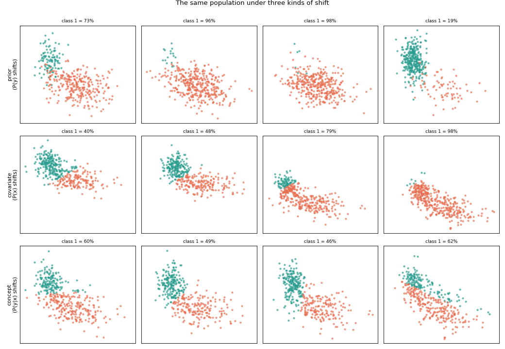
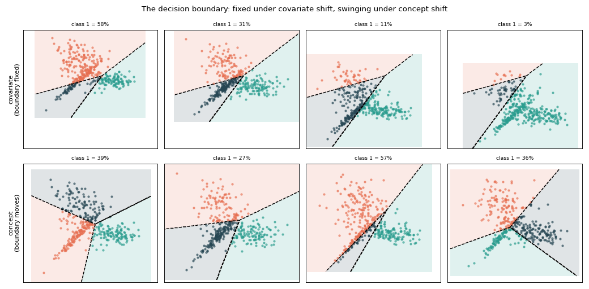
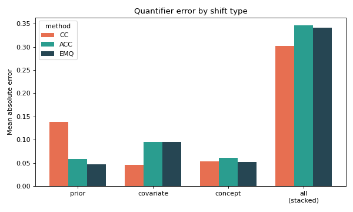
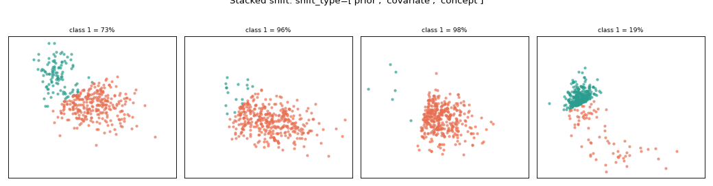

Covariate and concept shift#
Prior-probability shift is the classic quantification setting, but
make_quantification can also generate the other two
canonical kinds of dataset shift through shift_type:
prior — \(P(y)\) changes; the clusters keep their position.
covariate — the position of the features changes: each bag’s feature cloud is translated, carrying its labels along.
concept — the decision boundary moves: the points stay put and are relabelled by a per-bag rotation of a reference boundary.
Seen bag by bag in two dimensions, each shift looks distinct:
import matplotlib.pyplot as plt
from mlquantify.datasets import make_quantification
specs = [
("prior\n(P(y) shifts)",
dict(shift_type="prior", prevalence="uniform")),
("covariate\n(P(x) shifts)",
dict(shift_type="covariate", covariate_scale=1.5)),
("concept\n(P(y|x) shifts)",
dict(shift_type="concept", concept_strength=1.5)),
]
n_show = 4
# share axes within each row so the covariate row's translation is visible
fig, axes = plt.subplots(3, n_show, figsize=(13, 9), sharex="row", sharey="row")
for row, (label, kwargs) in enumerate(specs):
Xs, ys, prevs = make_quantification(
n_batches=n_show, batch_size=400, n_features=2, n_redundant=0,
class_sep=1.0, random_state=0, **kwargs,
)
for col in range(n_show):
ax = axes[row, col]
X, y = Xs[col], ys[col]
for k, color in enumerate(["#2a9d8f", "#e76f51"]):
mask = y == k
ax.scatter(X[mask, 0], X[mask, 1], s=8, alpha=0.6, color=color)
ax.set_title(f"class 1 = {prevs[col, 1]:.0%}", fontsize="small")
ax.set_xticks([])
ax.set_yticks([])
axes[row, 0].set_ylabel(label, fontsize="medium")
fig.suptitle("The same population under three kinds of shift", y=1.0)
fig.tight_layout()

Read each row: under prior shift the two clusters keep their place and only their balance changes; under covariate shift the point cloud is translated to a new position each bag while the decision boundary stays in the same place — so as the cloud slides across that fixed boundary a class appears in new regions and the proportions change; under concept shift the cloud stays fixed but the colouring changes as the decision boundary itself rotates from bag to bag.
Knowing the decision boundary#
Because the labelling rule is explicit, return_boundary=True hands back the
exact boundary used for each bag — no need to re-fit anything. Overlaying it
(dashed) makes the contrast plain: under covariate shift the boundary is the
same in every panel while the cloud slides across it; under concept shift the
cloud is fixed and the boundary itself swings from bag to bag.
import numpy as np
import matplotlib.pyplot as plt
from mlquantify.datasets import make_quantification
def draw_boundary(ax, w, b):
ax.axline((0.0, -b / w[1]), slope=-w[0] / w[1], color="k", ls="--", lw=1.5)
def draw_multiclass_boundary(ax, X, coef, intercept):
x0_min, x0_max = X[:, 0].min() - 0.8, X[:, 0].max() + 0.8
x1_min, x1_max = X[:, 1].min() - 0.8, X[:, 1].max() + 0.8
xx0, xx1 = np.meshgrid(
np.linspace(x0_min, x0_max, 250),
np.linspace(x1_min, x1_max, 250),
)
grid = np.c_[xx0.ravel(), xx1.ravel()]
scores = grid @ np.asarray(coef).T + np.asarray(intercept)
pred = scores.argmax(axis=1).reshape(xx0.shape)
colors = ["#2a9d8f", "#e76f51", "#264653"]
cmap = plt.matplotlib.colors.ListedColormap(colors[: scores.shape[1]])
ax.contourf(
xx0, xx1, pred,
levels=np.arange(scores.shape[1] + 1) - 0.5,
cmap=cmap,
alpha=0.14,
)
ax.contour(
xx0, xx1, pred,
levels=np.arange(scores.shape[1]) - 0.5,
colors="k",
linewidths=1.3,
linestyles="--",
)
# Covariate: one fixed boundary, returned for every bag.
Xs_c, ys_c, prevs_c, bnd_c = make_quantification(
n_batches=4, batch_size=400, shift_type="covariate", covariate_scale=1.5,
n_classes=3,
n_features=2, n_redundant=0, class_sep=1.0, return_boundary=True,
random_state=0,
)
# Concept: each bag's own rotated boundary, returned directly.
Xs_k, ys_k, prevs_k, bnd_k = make_quantification(
n_batches=4, batch_size=400, shift_type="concept", concept_strength=1.0,
n_classes=3,
n_features=2, n_redundant=0, class_sep=1.0, return_boundary=True,
random_state=0,
)
fig, axes = plt.subplots(2, 4, figsize=(13, 6.4), sharex="row", sharey="row")
for i, (ax, X, y, p) in enumerate(zip(axes[0], Xs_c, ys_c, prevs_c)):
for k, color in enumerate(["#2a9d8f", "#e76f51", "#264653"]):
ax.scatter(*X[y == k].T, s=8, alpha=0.6, color=color)
if np.ndim(bnd_c.coef[i]) == 1:
draw_boundary(ax, bnd_c.coef[i], bnd_c.intercept[i])
else:
draw_multiclass_boundary(ax, X, bnd_c.coef[i], bnd_c.intercept[i])
ax.set_title(f"class 1 = {p[1]:.0%}", fontsize="small")
ax.set_xticks([]); ax.set_yticks([])
axes[0, 0].set_ylabel("covariate\n(boundary fixed)")
for i, (ax, X, y, p) in enumerate(zip(axes[1], Xs_k, ys_k, prevs_k)):
for k, color in enumerate(["#2a9d8f", "#e76f51", "#264653"]):
ax.scatter(*X[y == k].T, s=8, alpha=0.6, color=color)
if np.ndim(bnd_k.coef[i]) == 1:
draw_boundary(ax, bnd_k.coef[i], bnd_k.intercept[i])
else:
draw_multiclass_boundary(ax, X, bnd_k.coef[i], bnd_k.intercept[i])
ax.set_title(f"class 1 = {p[1]:.0%}", fontsize="small")
ax.set_xticks([]); ax.set_yticks([])
axes[1, 0].set_ylabel("concept\n(boundary moves)")
fig.suptitle("The decision boundary: fixed under covariate shift, swinging under concept shift")
fig.tight_layout()

Why it matters for quantification#
The three shifts stress different assumptions, so the right method depends on which shift you expect. On a deliberately hard problem (40 features — mostly noise —, low class separation, 5% label noise), fitting on a balanced training sample and scoring across the bags of each type — including all three shifts stacked together:
import numpy as np
import matplotlib.pyplot as plt
from sklearn.linear_model import LogisticRegression
from mlquantify import set_config
from mlquantify.datasets import make_quantification
from mlquantify.counting import CC, ACC
from mlquantify.likelihood import EMQ
set_config(prevalence_return_type="array") # predictions come back as arrays
shifts = {
"prior": dict(shift_type="prior", prevalence="uniform"),
"covariate": dict(shift_type="covariate", covariate_scale=2.5),
"concept": dict(shift_type="concept", concept_strength=2.5),
"all\n(stacked)": dict(
shift_type=["prior", "covariate", "concept"], prevalence="uniform",
covariate_scale=2.5, concept_strength=2.5,
),
}
methods = {"CC": CC, "ACC": ACC, "EMQ": EMQ}
scores = {name: [] for name in methods}
for kwargs in shifts.values():
Xtr, ytr, Xs, ys, prevs = make_quantification(
n_batches=150, batch_size=200, return_train=True,
train_prevalence=[0.5, 0.5], n_features=40, n_redundant=0,
class_sep=0.5, flip_y=0.05, random_state=0, **kwargs,
)
for name, Method in methods.items():
q = Method(LogisticRegression(max_iter=1000)).fit(Xtr, ytr)
pred = np.vstack([q.predict(Xb) for Xb in Xs])
scores[name].append(float(np.mean(np.abs(pred - prevs))))
fig, ax = plt.subplots(figsize=(7.5, 4.5))
x = np.arange(len(shifts))
width = 0.25
for i, (name, color) in enumerate(zip(methods, ["#e76f51", "#2a9d8f", "#264653"])):
ax.bar(x + (i - 1) * width, scores[name], width, label=name, color=color)
ax.set_xticks(x)
ax.set_xticklabels(list(shifts))
ax.set_ylabel("Mean absolute error")
ax.set_title("Quantifier error by shift type")
ax.legend(title="method")
fig.tight_layout()

Each shift on its own is survivable by the right method: under prior shift the adjusted methods (ACC, EMQ) clearly beat plain CC; under covariate shift the picture inverts (because \(P(y \mid x)\) is unchanged, CC’s count stays accurate while ACC/EMQ over-correct); and under concept shift the rotation alone barely moves the class balance, so errors stay small. But stack all three and the effects compound — extreme prevalences (prior) seen through translated features (covariate) under a rotated boundary (concept) — and every method’s error explodes to ~0.35–0.40. The lesson the synthetic generator makes concrete: match the quantifier to the shift you expect, and when several shifts strike at once no fixed-classifier quantifier is safe.
Stacking shifts for a more diverse dataset#
Real data rarely shifts in just one way. Pass a list to shift_type to
stack them: the shifts compose per bag — covariate translates the features,
concept rotates the boundary, and prior resamples to a target prevalence. The
example below combines all three, so each bag differs in position, labelling rule
and class balance at once.
import matplotlib.pyplot as plt
from mlquantify.datasets import make_quantification
Xs, ys, prevs = make_quantification(
n_batches=4, batch_size=400,
shift_type=["prior", "covariate", "concept"],
prevalence="uniform", covariate_scale=1.2, concept_strength=0.9,
n_features=2, n_redundant=0, class_sep=1.0, random_state=0,
)
fig, axes = plt.subplots(1, 4, figsize=(13, 3.4), sharex=True, sharey=True)
for ax, X, y, p in zip(axes, Xs, ys, prevs):
for k, color in enumerate(["#2a9d8f", "#e76f51"]):
ax.scatter(*X[y == k].T, s=8, alpha=0.6, color=color)
ax.set_title(f"class 1 = {p[1]:.0%}", fontsize="small")
ax.set_xticks([]); ax.set_yticks([])
fig.suptitle("Stacked shift: shift_type=['prior', 'covariate', 'concept']", y=1.02)
fig.tight_layout()

Every knob still applies (prevalence, covariate_scale,
concept_strength), and return_prevalences reports the achieved balance of
each combined bag.
See also
make_quantification—covariate_scaleandconcept_strengthcontrol the shift magnitude.Prior shift, bag by bag — prior shift on its own, bag by bag.
Benchmarking quantifiers on synthetic bags — the diagonal view under prior shift.